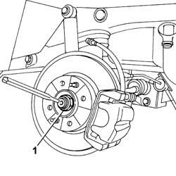
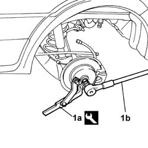
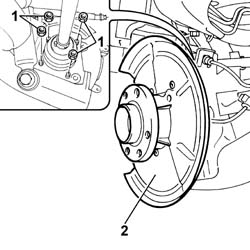
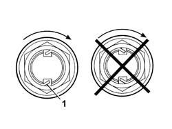

4450D11 ONE REAR WHEEL HUB, LH OR RH - R+R WITH WHEELS REMOVED FOR VERSIONS WITH ABS
- Path
- Procedures > 44 SUSPENSION AND WHEELS > 4450 HUBS AND WHEELS > 4450D REAR WHEEL HUBS > 4450D11 ONE REAR WHEEL HUB, LH OR RH - R+R WITH WHEELS REMOVED FOR VERSIONS WITH ABS
- Kind
- repair procedure (removal / refitting; the operation number is the code)
- Applies to
- engines: 1.2 8v; all production periods
- Interactive page
- https://sloeber94.github.io/elrnDB-fPnd/en/#/169001863
Applies to: engines: 1.2 8v; all production periods
 Removing
Removing
 Refitting
RefittingPosition the vehicle on a lift.
Raise the vehicle.
1. Remove the staking from the wheel side constant velocity joint nut.

Applies to: engines: 1.2 8v; all production periods
1. Position the special tool (1a) for counter-torque and loosen the nut fixing the constant velocity joint using the spanner (1b).
Description | Code | Function | |
|---|---|---|---|
1a | Counter-torque | 1.870.815.000 | Reaction |

Applies to: engines: 1.2 8v; all production periods
Op. 3310B57 REAR CALLIPER BRACKET - R R
Op. 3310B50 REAR BRAKE DISCS R R
1. Undo the fixing nuts and remove the wheel hub.

Applies to: engines: 1.2 8v; all production periods
Refitting
RemovingFit the wheel hub and tighten the fixing nuts.
Op. 3310B50 REAR BRAKE DISCS R R
Op. 3310B57 REAR CALLIPER BRACKET - R R
Position the special tool for counter-torque and tighten the nut fixing the constant velocity joint to the recommended torque pre-tightening it first.
Description | Code | Function | |
|---|---|---|---|
- | Counter-torque | 1.870.815.000 | Reaction |
Value - daNm | Fastening | Component | Ø | |
|---|---|---|---|---|
- | 7 | Nut | - | M22 |
Value - daNm | Fastening | Component | Ø | |
|---|---|---|---|---|
- | 22 | Nut | - | M22 |
1. Stake the constant velocity joint side nut.

Applies to: engines: 1.2 8v; all production periods
Lower the vehicle.
Remove the vehicle from the lift.